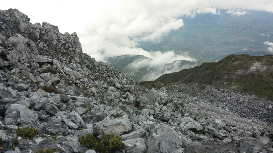

• ISLAND GARDEN CITY OF SAMAL


 The island of Samal, also known as IGACOS or Island Garden City of Samal is an island City located at the heart of Davao Gulf just right beside the City of Davao. The place is just an approximately 10minutes away from Davao City via a barge or motor banca(Lancha) with 24 hours travel and a frequency of about 10-20mins between every trip departures. The island city was surrounded by white sand beaches, crystal clear water and the hidden garden or the rich corals found below the Davao gulf that is perfect for snorkelin g and diving. You can find countless resorts that offer different kind of views, adventures and experiences that surely fit your needs. Some of them offer water sports, there are cliff diving spots, a vanishing island, a coral garden, a taclobo farm, a retreat area and those with infinity pools by the bay. You will surely want to include in your bucket list the Talicud Island -- a smaller sub-island of IGACOS where virgin beaches and nice sceneries are found.
The island of Samal, also known as IGACOS or Island Garden City of Samal is an island City located at the heart of Davao Gulf just right beside the City of Davao. The place is just an approximately 10minutes away from Davao City via a barge or motor banca(Lancha) with 24 hours travel and a frequency of about 10-20mins between every trip departures. The island city was surrounded by white sand beaches, crystal clear water and the hidden garden or the rich corals found below the Davao gulf that is perfect for snorkelin g and diving. You can find countless resorts that offer different kind of views, adventures and experiences that surely fit your needs. Some of them offer water sports, there are cliff diving spots, a vanishing island, a coral garden, a taclobo farm, a retreat area and those with infinity pools by the bay. You will surely want to include in your bucket list the Talicud Island -- a smaller sub-island of IGACOS where virgin beaches and nice sceneries are found.
• TAGUM CITY

 Tagum City is a 1st class component city and the capital of the province of Davao del Norte. The City offers different and unique experiences or adventurers. It is approximately an hour and a half travel from Davao International Airport and before you reach the the city proper, you will be greeted by Palm trees lined up side by side by its wide and well maintained road. There are parks found in different areas that added to its attraction. You will get to enjoy fiestas as they celebrate about 4-5 festivities annually like Harvest, Patronal (Christ the King) Fiesta, Music Festival, Indigenous Fiesta during October and the much awaited Christmas Festival in the month of December when the City Government launches the Philippine’s tallest Christmas Tree placed just in front of their Modern City Hall building.
Tagum City is a 1st class component city and the capital of the province of Davao del Norte. The City offers different and unique experiences or adventurers. It is approximately an hour and a half travel from Davao International Airport and before you reach the the city proper, you will be greeted by Palm trees lined up side by side by its wide and well maintained road. There are parks found in different areas that added to its attraction. You will get to enjoy fiestas as they celebrate about 4-5 festivities annually like Harvest, Patronal (Christ the King) Fiesta, Music Festival, Indigenous Fiesta during October and the much awaited Christmas Festival in the month of December when the City Government launches the Philippine’s tallest Christmas Tree placed just in front of their Modern City Hall building.
• DAVAO CITY DOWNTOWN
Davao City as a rich and buzzling city, those who are fond of strolling with tall buildings around and a beautiful landscape in the background, will surely enjoy this place. One of the cleanest city in the Philippines, this city will offer a nice surrounding view as you cannot see a single trash and food wrappers in its busy thoroughfares. C.M. Recto and San Pedro Street let you experience a place without the irritating and eye sore spaghetti lines as these streets were the initial phases where the Davao City’s underground cabling was implemented. You may visit the city in August of every year and experience the colorful and enjoyable Kadayawan Festival. Fruits like pomelo, rambutan, Lansones, Marang, Mangosteen and the King of Fruit Durian were abundant in the city.